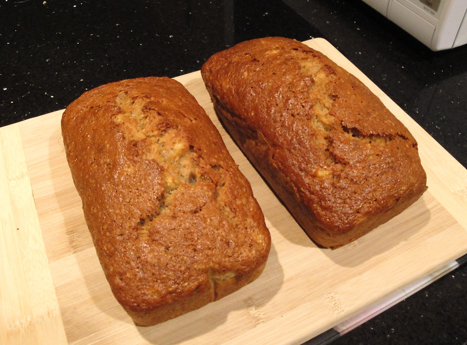

Banana Bread

Description
A not-too-sweet quickbread that makes a delicious breakfast treat or snack.
This is a great way to use up over-ripe bananas.
Makes about 10 slices
Ingredients
- 1 1/4 to 1 1/2 cups mashed ripe banana (about 2 or 3 bananas)
- 1/3 c butter, melted (76 grams)
- 1/2 tsp baking soda
- 1 pinch salt
- 3/4 cup white sugar. You can use 1/2 cup instead if you prefer less sweet (100 - 150 grams)
- 1 egg, beaten
- 1 tsp vanilla extract
- 1 1/2 c All-purpose flour (205 grams)
Steps
- Preheat oven to 350°F and butter an 8 x 4" loaf pan.
- Mix together banana and butter.
- Sprinkle baking soda and salt over banana mixture & mix.
- Add egg, sugar, and vanilla & mix.
- Finally, add flour and stir just until the flour is not visible - try not to overmix.
- Bake 50 minutes to 1 hour, or until a tester inserted in the middle of the cake comes out clean.